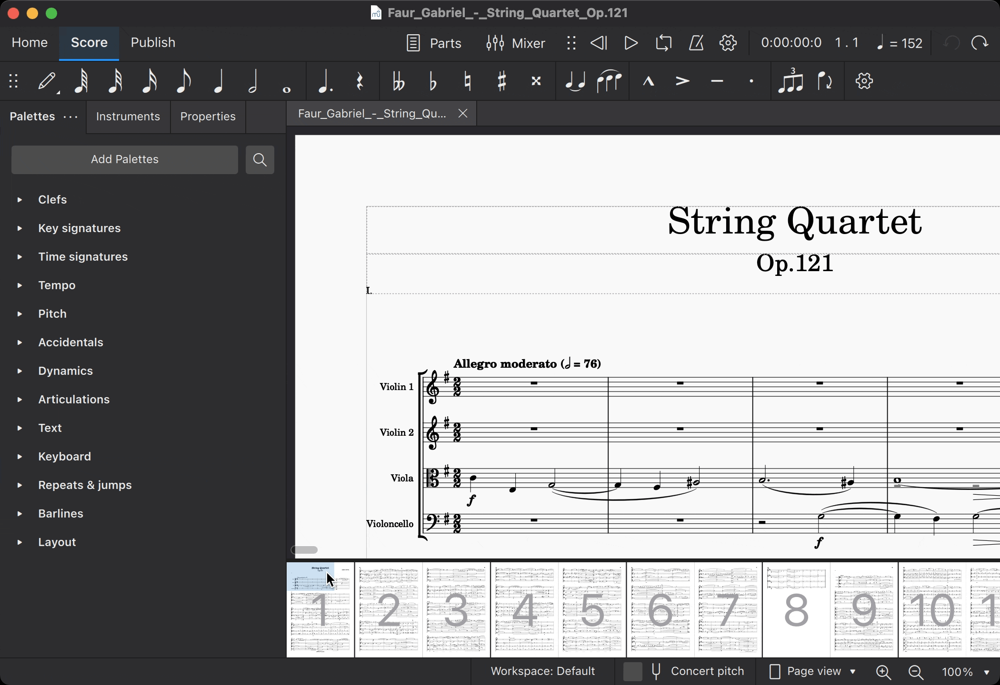
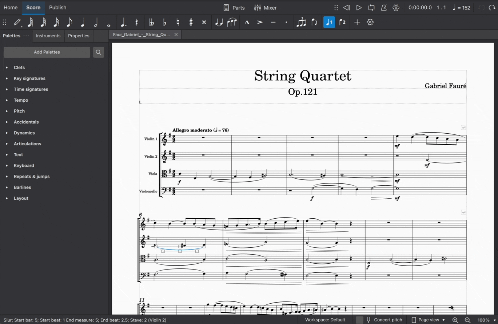

Navigating your score
Scrolling
Mouse wheel
- Use the scroll wheel to move the view up and down.
- Use
Shiftplus the scroll wheel to move the view left and right. - Use
Ctrlplus the scroll wheel to zoom in and out.
Scrollbars
Scrollbars appear at the right-hand and bottom edges of the score view. Click and drag them to quickly move the score view up and down, or left and right. Scrollbars are usually hidden from view, but can be revealed by hovering over the edge of the score view with your mouse.

Keyboard
You can also scroll the score using the PgUp, PgDn, Home, and End keys on your keyboard. If your keyboard lacks dedicated keys for these functions, most systems will also allow you to access these functions by holding Fn or a similar key, then pressing Up, Down, Left, or Right respectively.
By themselves, PgUp and PgDn scroll one screenful at a time. This may be less than an actual page of your score. If you hold Ctrl (Mac: Cmd) while pressing PgUp or PgDn, it moves a full page at a time.
Element navigation
When a single element is selected in your score, it acts as a cursor. You can change the selection—and thus move the cursor—using common keyboard shortcuts.
The Left and Right keys will move horizontally through your score one chord or rest at a time. If you hold Ctrl (Mac: Cmd) while pressing Left or Right, you can navigate a full bar at a time.
To move the cursor vertically through the various notes, voices, and staves in your score, use the shortcuts Alt+Up and Alt+Down (Mac: Option+Up and Option+Down).
You can also use the shortcuts Alt+Left and Alt+Right (Mac: Option+Left and Option+Right) to select elements other than notes or rests. These commands allow you select almost any elements—including articulations, barlines, hairpins, and more—using the keyboard alone.
In addition, Ctrl+Home (Mac: Cmd+Home) will select the first element in your score, and Ctrl+End (Mac: Cmd+End) will select the last element. Again, for keyboards that lack dedicated Home and End keys, most systems provide the alternative of Fn+Left and Fn+Right respectively.
See Default keyboard shortcuts to learn more.
Navigator
The Navigator is a panel that displays thumbnails of score pages. To view or hide the Navigator, click View → Navigator.

The blue bounding box represents the area of the score currently in focus in the score view. Click on the box and drag it to move around your score.
Timeline
A navigation aid that shows instruments and score structure. For details, see Timeline.
Views
You can switch between different views of the score using the pop-up in the right-hand side of the status bar.

Page view
The score is shown as it will appear when printed or exported as a PDF or image file: that is, page by page, with margins. MuseScore applies system (line) and page breaks automatically, according to the settings made in Page settings and Style. In addition, you can apply your own system (line), page or section breaks.
Continuous view (horizontal)
The score is shown as one unbroken system. Even if the starting point is not in view, bar numbers, instrument names, clefs, time and key signatures will always be displayed on the left of the window.
Continuous view (vertical)
The score is shown as a single page with a header but no margins, and with an infinite page height. System (line) breaks are added automatically, according to the settings made in Page settings and Style. In addition, you can apply your own system (line) or section breaks.
Zoom
There are several ways to zoom the score in or out:
Zoom in
Ctrl++ (Mac: Cmd++)\
or scroll up with the mouse scroll wheel while holding Ctrl (Mac: Cmd).
Zoom out
Ctrl+- (Mac: Cmd+-)\
or scroll down with the mouse scroll wheel while holding Ctrl (Mac: Cmd).
Status bar zoom controls
To zoom in and out of your score from the Status bar controls:
- Click on the magnifying glass icons in the right-hand area of the status bar
- Click the number field to the right of these icons, then type a custom zoom level
- Choose from one of the preset zoom levels in the pop-up list on the extreme right

Restoring 100% zoom
This restores the zoom to the default (100%) level.
Ctrl+0 (Mac: Cmd+0)
Find/Go to
The Find/Go to panel allows you to speedily navigate to a specific bar, rehearsal mark or page number in the score.
To show the panel:
- Go to Edit → Find, or
- Press
Ctrl+F(Mac:Cmd+F).
To hide the panel:
- Click the X (close) button on the left side of the panel, or
- Press
Escwhile the panel has focus.
Navigating to a numbered bar
Enter the bar number (counting every bar, starting with 1, irrespective of pickup bars, section breaks or manual changes to bar number offsets).
Navigating to a numbered page
Enter the page number using the format pXX (where XX is the page number).
Navigating to a numerical rehearsal mark
Enter the number using the format rXX (where XX is the number of the rehearsal mark).
Navigating to an alphabetic rehearsal mark
Enter the name of the rehearsal mark (the search is not case sensitive).
Pro tip! It is best to avoid naming rehearsal marks with the single letters “R", “r", “P”, “p", or one of these letters with an integer (e.g. “R1” or “p3”), as this can confuse the search algorithm.